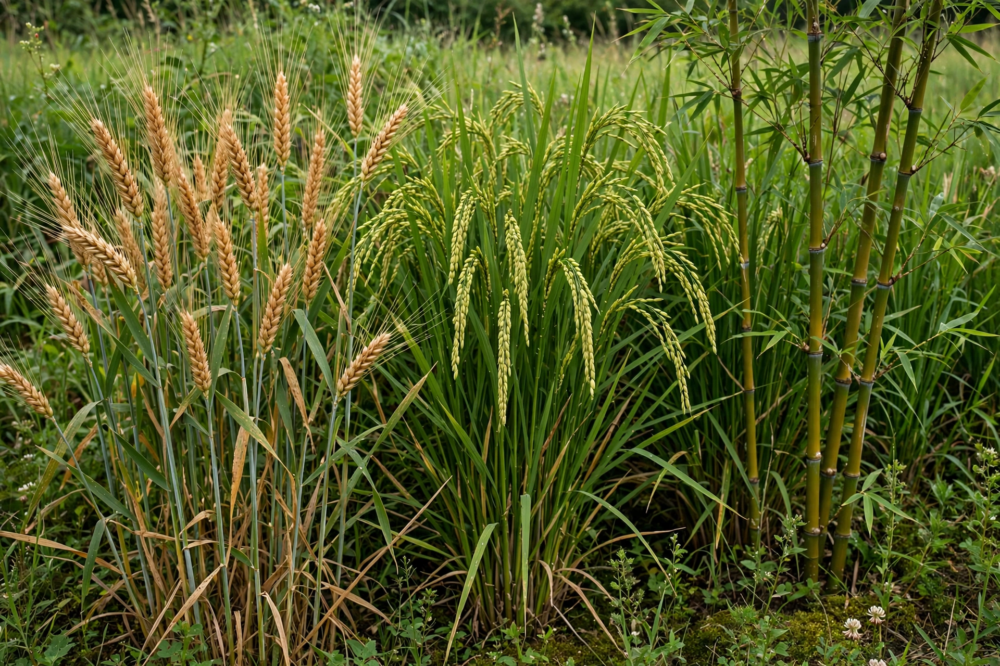

Kingdom: Plantae
Order: Poales
Family: Poaceae
Genera: About 780; species about 12,000
Poaceae, also called Gramineae, is the grass family — a large and economically vital family of monocotyledonous flowering plants. It includes the cereal crops wheat, rice, maize, barley and oats, as well as sugarcane, bamboo and the grasses of lawns, savannas and steppes.
Grasses have hollow, jointed stems (culms), narrow parallel-veined leaves with sheathing bases, and small wind-pollinated flowers grouped in spikelets. Growth from basal meristems lets grasses tolerate grazing and mowing.
Grasslands cover roughly a fifth to a third of Earth's land surface. Grasses provide the majority of humanity's food energy directly as grain and indirectly as forage for livestock. Unlike the two-seeded dicotyledons, grasses are monocots with a single seed leaf.
Grasses diversified in the late Cretaceous and expanded with drying climates in the Cenozoic; C4 photosynthesis evolved repeatedly in the family, aiding success in warm, open habitats.